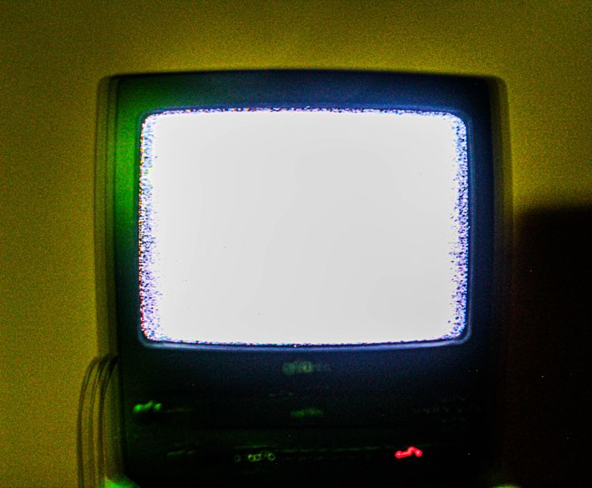
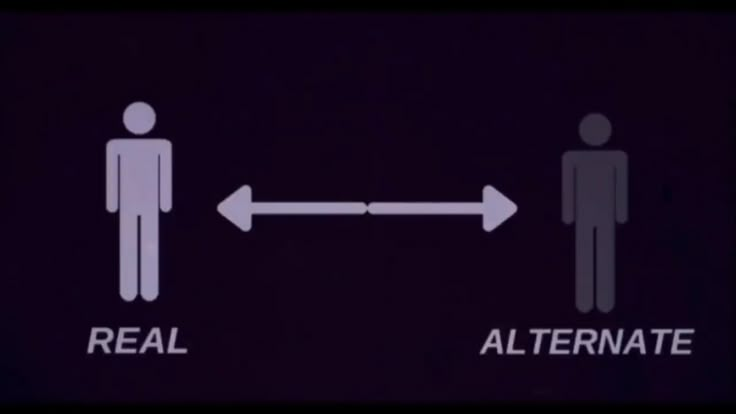
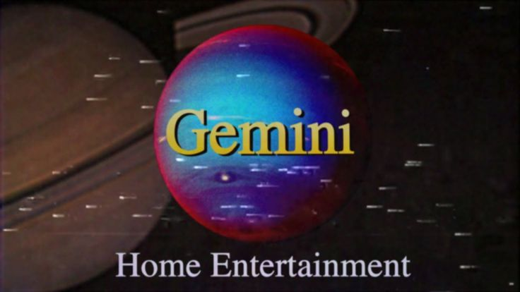
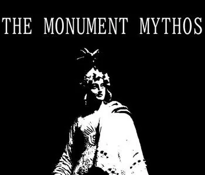
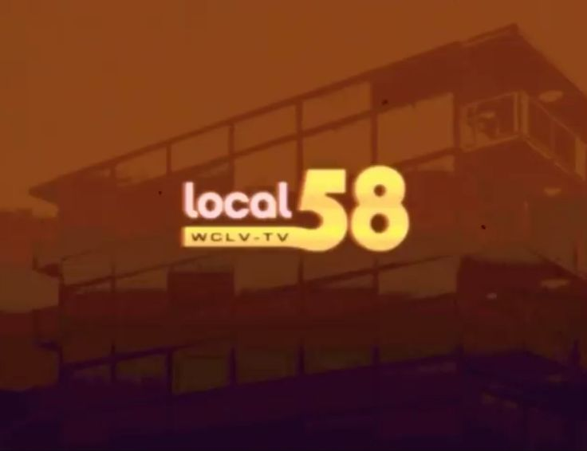
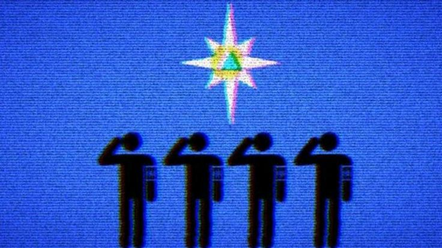
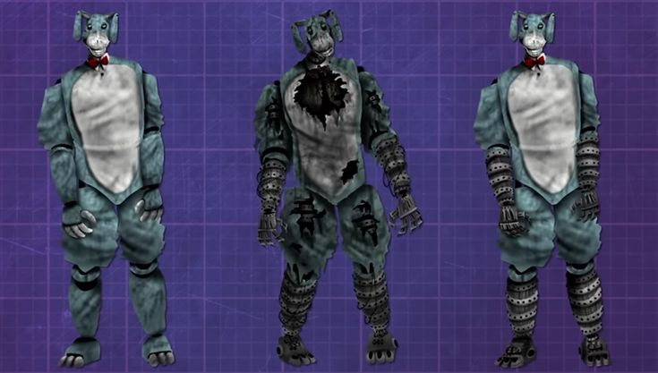

Вы когда-нибудь ловили себя на мысли, что прослушивание старой шипящей аудиозаписи или просмотр «снега» на выключенном телевизоре вызывает у вас необъяснимую тревогу?
Если да, то вы уже знакомы с эстетикой, которую использует аналоговый хоррор.
Сегодня мы поговорим об этом уникальном явлении.
Это поджанр ужасов, который родился не в Голливуде, а в глубоких уголках интернета .
Вместо дорогих спецэффектов, он использует то, что было у каждого дома 30 лет назад: старые VHS-кассеты, забытые образовательные программы и глючные телевизоры.
Что такое аналоговый хоррор?

Аналоговый хоррор — это веб-сериалы, стилизованные под записи прошлого века (60-90-е годы).
Главный прием здесь — «испорченная запись» .
Создатели мастерски имитируют помехи, искаженный звук и низкое качество картинки, чтобы стереть грань между вымыслом и реальностью.
В чем секрет воздействия:
1. Ностальгия + Тревога. Мы привыкли доверять голосу диктора в старых учебных фильмах. Когда этот знакомый голос начинает сходить с ума и рассказывать о вторжении монстров, наш мозг впадает в ступор .
2. Борьба с «Зловещей долиной». Часто вместо открытой жестокости используется искажение человеческого лица (неправильные пропорции, неестественные улыбки). Это вызывает подсознательный ужас, минуя рациональное мышление .
3. Формат Lost Media. Ощущение, что ты нашел запретную кассету, которую никто не должен был видеть, заставляет сердце биться чаще .
Гид по вселенным: с чего начать?
1. «Каталог Манделы» (The Mandela Catalogue)
Это лицо современного жанра. События разворачиваются в округе Мандела, где люди сталкиваются с сущностями, называемыми «Альтернативами».
Это создания, которые принимают облик людей, но делают это неидеально.
Главный враг здесь — страх и паранойя. Сюжет мастерски переплетает библейские мотивы с технологиями слежки .
Посмотреть по ссылке

2. «Gemini Home Entertainment»
Любите фильмы о паразитах и телесном хорроре без крови? Это сериал в формате обучающих видео «для выживания в дикой местности».
На первый взгляд, это безобидная инструкция о природе, но постепенно вы понимаете, что лес вокруг вас дышит, а олени — это вовсе не олени.
Здесь очень сильная тема паразитизма и потери контроля над своим телом .
Посмотреть по ссылке

3. «Мифы Монументов» (The Monument Mythos)
Проект для тех, кто любит альтернативную историю.
Автор берет знаменитые статуи и памятники США и превращает их в нечто зловещее и живое. Что если бы президентом был Джеймс Дин?
Что если бы статуя Свободы была порталом в ад? Это очень творческий и визуально необычный взгляд на жанр .
Посмотреть по ссылке

4. «Local 58»
Классика и основа жанра. Представьте, что вы переключаете каналы ночью и натыкаетесь на сигнал единственной местной телебашни.
Вместо обычных новостей — инструкция о том, как правильно лежать на газоне, спасаясь от света луны, или предупреждение: «Не смотрите на небо».
Самый камерный и атмосферный проект, который доказывает: страшно может быть даже от статичной картинки .
Посмотреть по ссылке

5. «Магнитошахтинская область» (Российский хоррор)
Отдельного внимания заслуживает наш отечественный представитель жанра. Сериал стилизован под ролики МЧС России.
Здесь вы узнаете о правилах поведения при встрече со славянской нечистью, которую здесь называют «акратиты» (Жердяи, Лесовики).
Смесь знакомой с детства вёрстки госуслуг и древнего фольклора работает безотказно .
Посмотреть по ссылке

6. «Файлы Уолтена» (The Walten Files)
Проект, который часто путают с «Пять ночей с Фредди», но он намного глубже. Стилизация под старый мультфильм и пиццерию 70-х. История рассказывает о трагедии семьи, пропавшей без вести, и о духах, запертых в роботах.
Это очень эмоциональный и грустный хоррор, где ужас исходит от осознания потери и одиночества, а убийства остаются «за кадром» .
Посмотреть по ссылке
